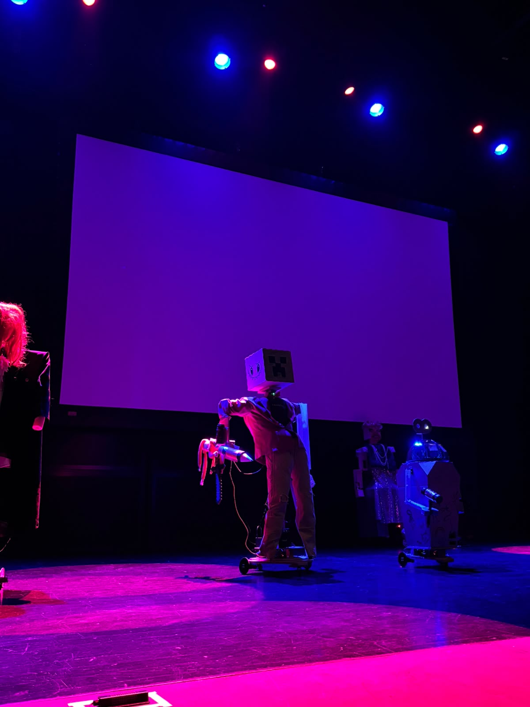
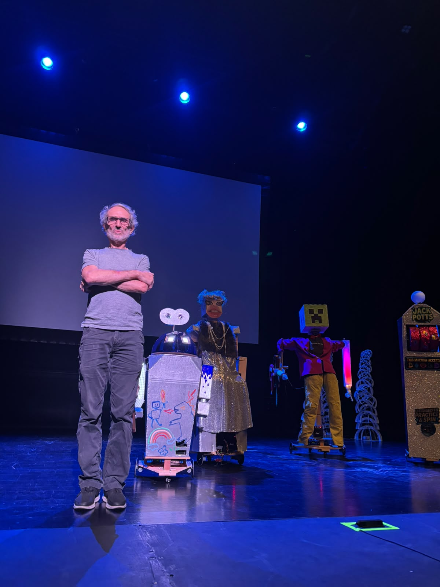
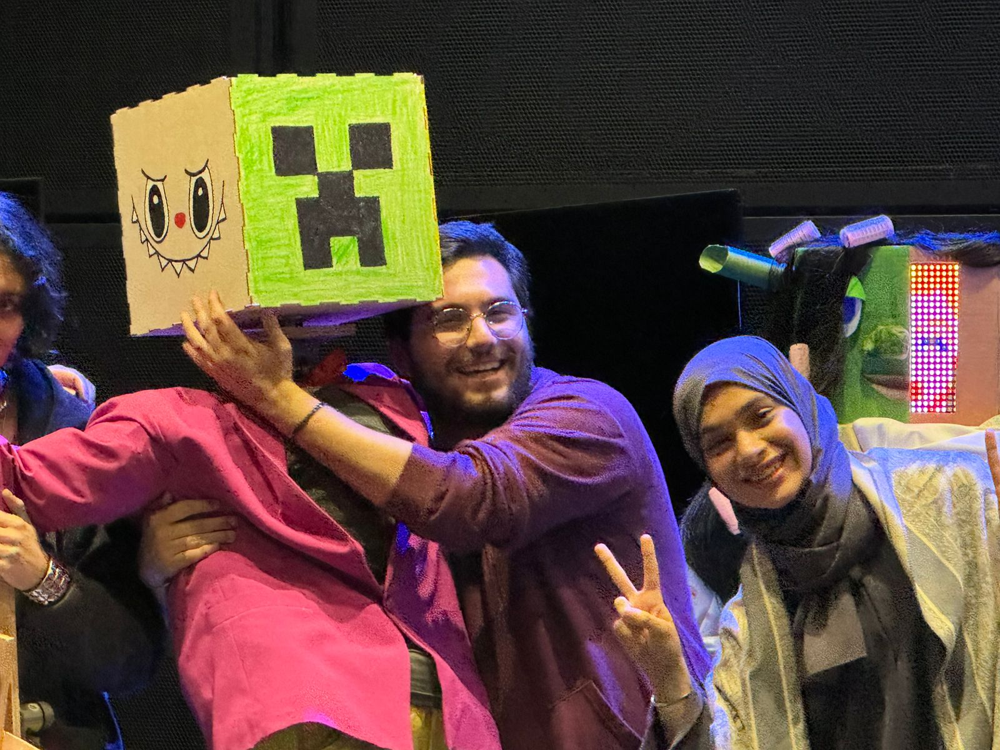
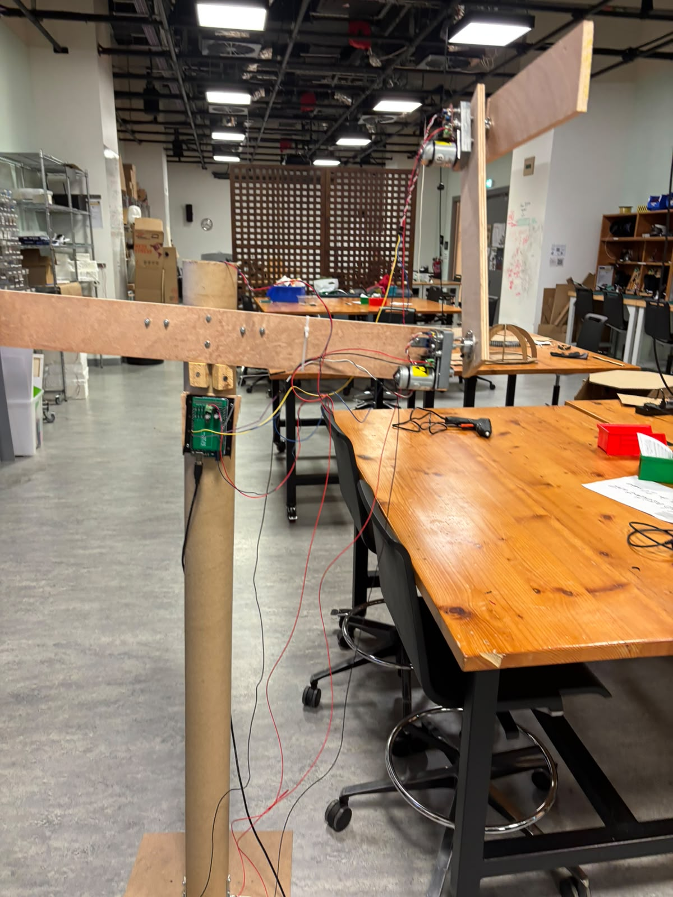
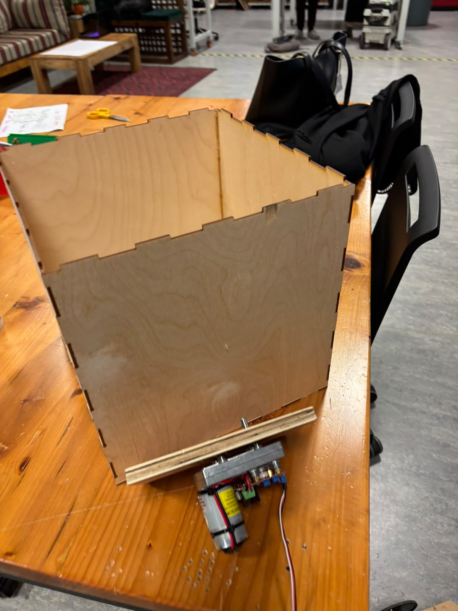
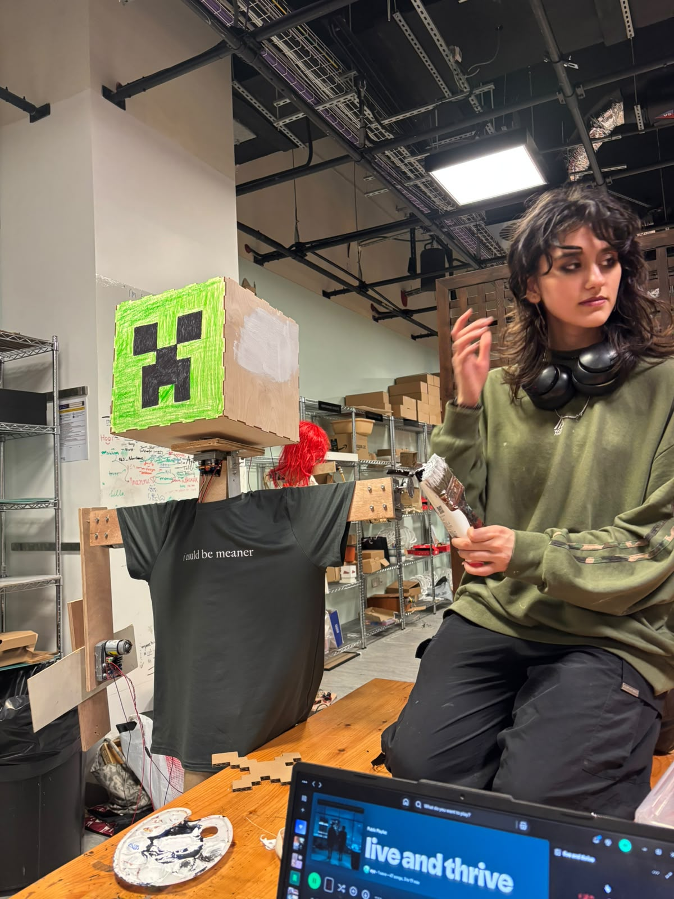
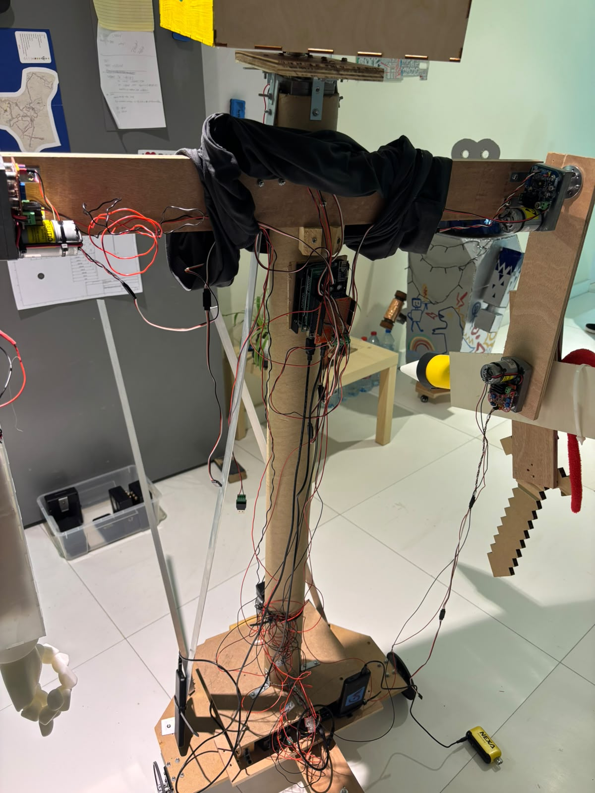
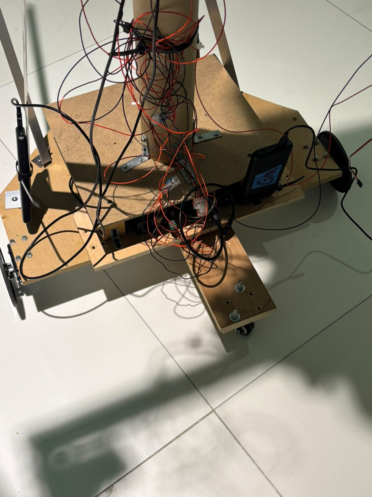
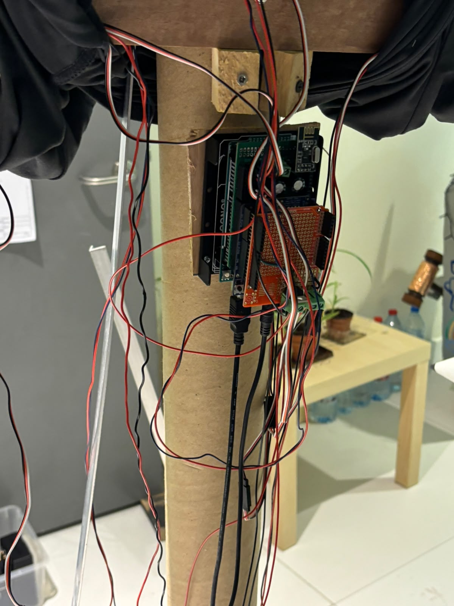
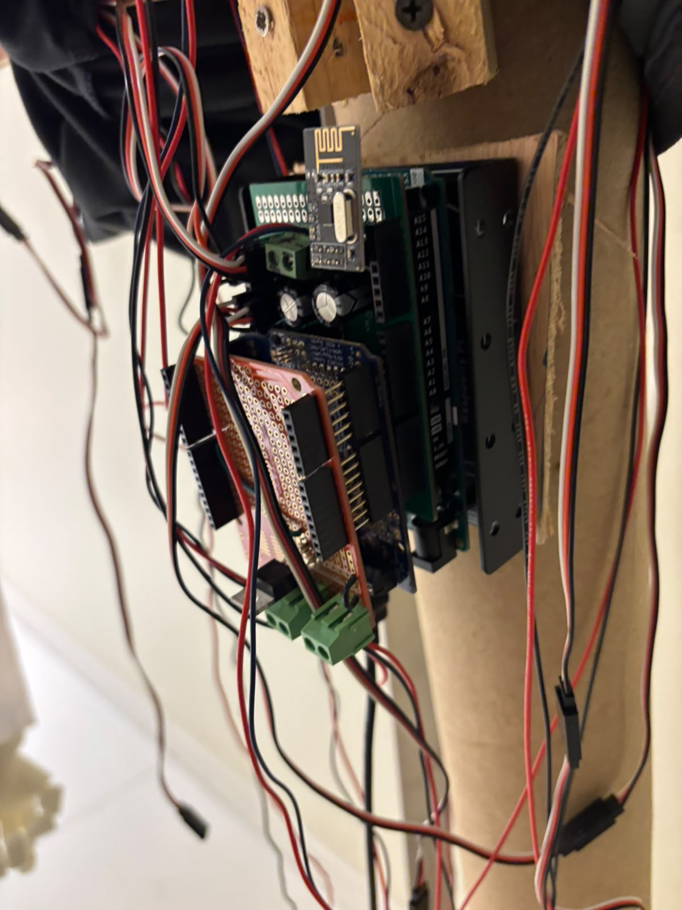

Concept
SaulBot is a custom-built performance robot made for NYU Abu Dhabi's Interactive Media robots showcase — a fleet of student-built machines that took the stage together. It was designed to move, express, and hold its own presence in front of an audience.
Build
The robot combines a fabricated chassis with actuators, electronics, and microcontroller-driven behavior.
TODO: describe SaulBot's character and role in the show, the drive/actuation system, the electronics and code (Arduino/CircuitPython), and what was hardest to get working.
gallery









